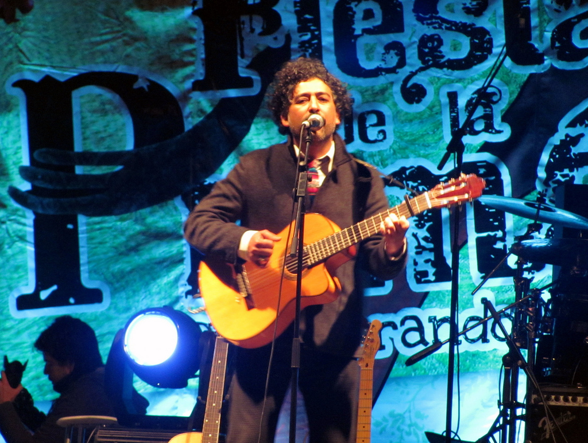
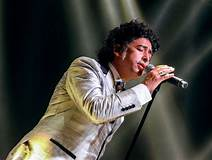

Manuel García
Manuel García nació en la ciudad de Arica el 1 de marzo del año 1970, Estudió Pedagogía en Historia y Geografía en la Universidad de Tarapacá, y se mudó a Santiago en 1994 para estudiar Interpretación Superior en Guitarra, en la Pontificia Universidad Católica de Chile junto a Luis Orlandini. Su carrera musical profesional comenzó en 1995, como participante de la banda de Mario Rojas, y como fundador de la banda Coré, la cual deja en 1997 para dedicarse a su nueva banda Mecánica Popular, que mezcla la trova con la música rock y las canciones de cuna.
Ha publicado seis discos de estudio: Pánico (2005), Témpera (2008), S/T (2010), Acuario (2012), Retrato Iluminado (2014) y Harmony Lane (2016), además de un disco + video en vivo, Pánico 10 Años (2016) y dos videos en vivo: En Vivo Teatro Caupolicán (2011) y Acuariovisión (2013). La mayoría de estas publicaciones han obtenido Disco de Platino o Multi Platino por sus ventas en Chile.


Solista
El año 2003 participó en la producción de un documental dedicado a la vida de Atahualpa Yupanqui,3 y en 2007 el director Ronnie Radonich realizó a su vez un documental sobre él, titulado Catalejo (una canción de Manuel García), premiado por el público en el Festival In-Edit el mismo año.3 También el mismo año inauguró como invitado el Festival Mercat de música Viva de Vic, en Barcelona, mediante un espectáculo que presentó durante un mes en la ciudad, en que interactuaban la música de Manuel García con la poesía del catalán Guillamino; participación que quedó plasmada en el álbum eXile, publicado en España el año siguiente.
En el sonido, se aleja por algunos ratos de la trova y se acerca un poco más al folclor local y al Rock. Tiene referencias explícitas a Violeta Parra y Atahualpa Yupanqui, claros inspiradores de Manuel. Además las letras en comparación con el anterior son menos complejas. Son más simples y directas, hasta llegar a ser algo coloquiales por algunos momentos.